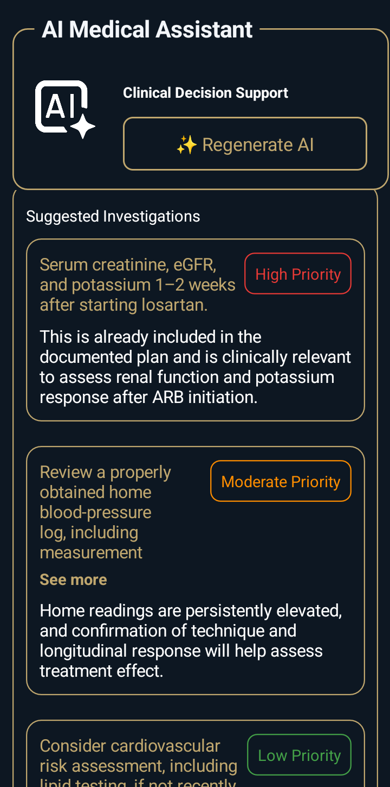

Guides du produit
Assistant médical IA pour analyser une consultation
L’assistant aide le médecin à examiner les données d’une visite. Son analyse se lit avec l’historique du patient et l’évaluation du praticien. Elle ne prend pas la décision clinique finale.
Télécharger sur Google Play Agrandir la capture
Agrandir la captureRésumé clinique
Commencer par les données de la consultation
Vérifiez le motif, les antécédents, les constatations et les examens enregistrés. Les données absentes ou inexactes peuvent influencer l’analyse. Les captures montrent un résumé, des alertes et des diagnostics différentiels : des éléments à examiner, pas des constatations établies ni des diagnostics confirmés.
Évaluer chaque examen suggéré
L’analyse propose aussi des examens et des éléments de suivi. Confrontez-les à la consultation et aux preuves disponibles. Le médecin décide de leur pertinence pour ce patient. Une suggestion générée ne constitue ni une ordonnance ni une demande automatique d’examen. Vérifiez les points importants avant de décider.
Étapes d’utilisation
- Vérifiez les informations cliniques de la visite.
- Ouvrez l’analyse et examinez le résumé et les hypothèses.
- Évaluez les examens proposés et les points utiles avant votre décision.
Dans l’application
Captures originales. Dossiers patients et discussion clinique fictifs ; coordonnées privées exclues.
Agrandir la captureRésumé clinique
 Agrandir la capture
Agrandir la captureAlertes et diagnostics différentiels


Agrandir la captureExamens suggérés
Questions sur cette fonction
L’assistant remplace-t-il le diagnostic du médecin ?
Non. Le diagnostic, le traitement et les décisions restent sous la responsabilité du professionnel traitant.
Que contient l’analyse présentée ?
Un résumé clinique, des alertes, des diagnostics différentiels et des examens suggérés.
Toutes les suggestions conviennent-elles à chaque patient ?
Non. Les résultats peuvent comporter erreurs ou omissions et nécessitent une revue clinique. La disponibilité dépend aussi de l’offre.